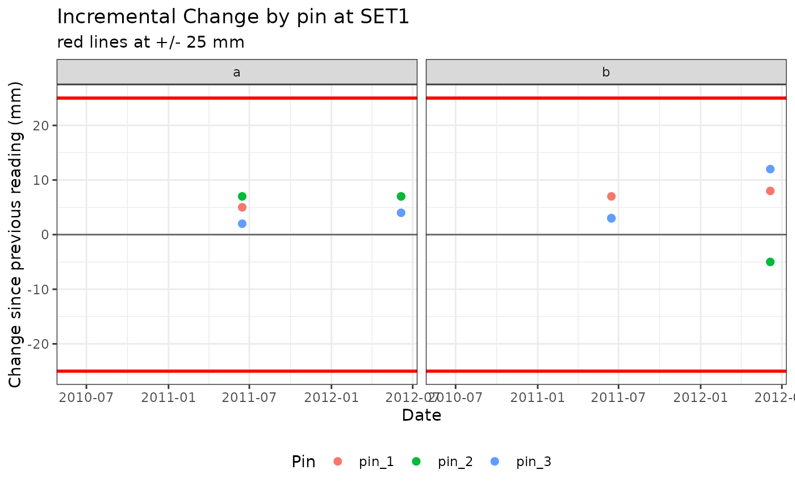
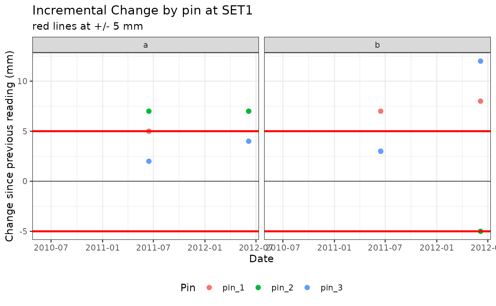
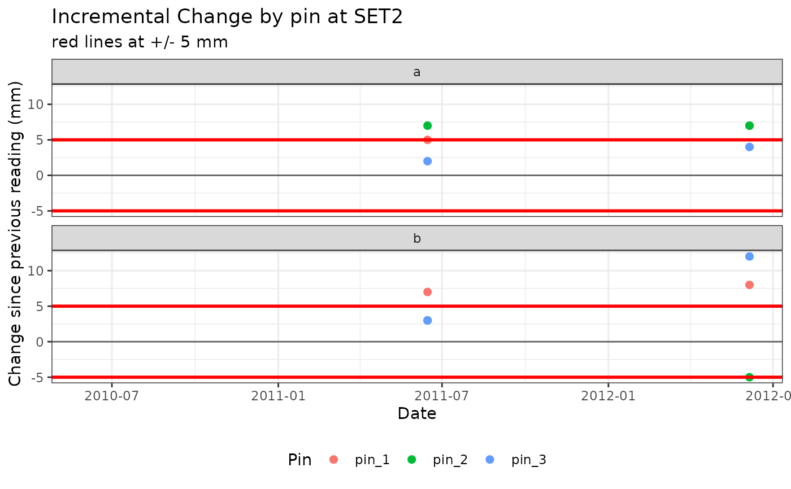

Plot change between readings, by pin
Usage
plot_incr_pin(
data,
set,
date = date,
set_id = set_id,
arm_position = arm_position,
pin_number = pin_number,
incr = incr,
threshold = 25,
columns = 2,
pointsize = 2,
scales = "fixed"
)Arguments
- data
data frame (e.g. `$pin` piece of output from `calc_change_incr()`) with one row per faceting variable. `incr` should be an already-calculated field of change since previous reading.
- set
SET ID to graph (required)
- date, set_id, arm_position, pin_number, incr
unquoted column names in `data`. Default to `date`, `set_id`, `arm_position`, `pin_number`, `incr` – the names used by `calc_change_incr()`'s output; override if your data uses different names.
- threshold
numeric value for red horizontal lines (at +/- this value); this should be a value that would be a meaningful threshold for incremental change.
- columns
number of columns for faceted output
- pointsize
size of points you want (goes into the `size` argument of `ggplot2::geom_point`)
- scales
passed to `facet_wrap`; same fixed/free options as that function
Examples
incr_set <- calc_change_incr(example_sets)
plot_incr_pin(incr_set$pin, set = "SET1")
#> Warning: Removed 6 rows containing missing values or values outside the scale range
#> (`geom_point()`).

plot_incr_pin(incr_set$pin, set = "SET1", threshold = 5)
#> Warning: Removed 6 rows containing missing values or values outside the scale range
#> (`geom_point()`).

plot_incr_pin(incr_set$pin, set = "SET2", threshold = 5, columns = 1)
#> Warning: Removed 6 rows containing missing values or values outside the scale range
#> (`geom_point()`).
